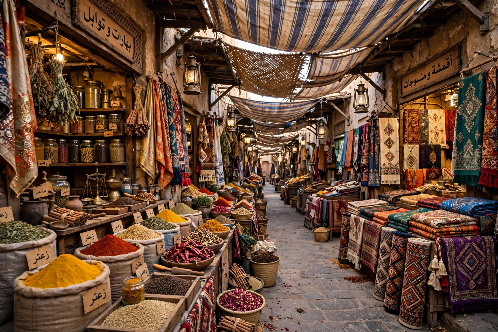

A souq or souk (Arabic: سوق, sūq) is a marketplace or commercial quarter in Middle Eastern and North African cities. Traditionally a souq consisted of specialised streets and covered alleys where traders of the same craft or commodity clustered together — goldsmiths, spice merchants, cloth sellers, coppersmiths — often near the main mosque and a caravanserai where travelling merchants lodged.

Historically, souqs were regulated by officials such as the muhtasib, who supervised weights, quality and fair dealing. Temporary and periodic markets (often named for the weekday on which they were held) served rural areas, while the great permanent covered souqs of cities such as Aleppo, Damascus, Cairo and Fez formed the commercial heart of the city over centuries.
The Al-Madina Souq in Aleppo was among the largest covered market complexes in the world, with some 13 kilometres of alleys, though it was badly damaged during the Syrian civil war. Cairo's Khan el-Khalili, founded in the 14th century, remains a major market and visitor attraction. The labyrinthine souqs of the medina of Fez in Morocco and the spice and gold souqs of Dubai's Deira district are other well-known examples. The Grand Bazaar of Istanbul is a comparable institution in the Turkish tradition.
The word is used across the Arab world for markets generally, from village market days to modern shopping districts, and many historic souqs remain working markets as well as heritage sites.